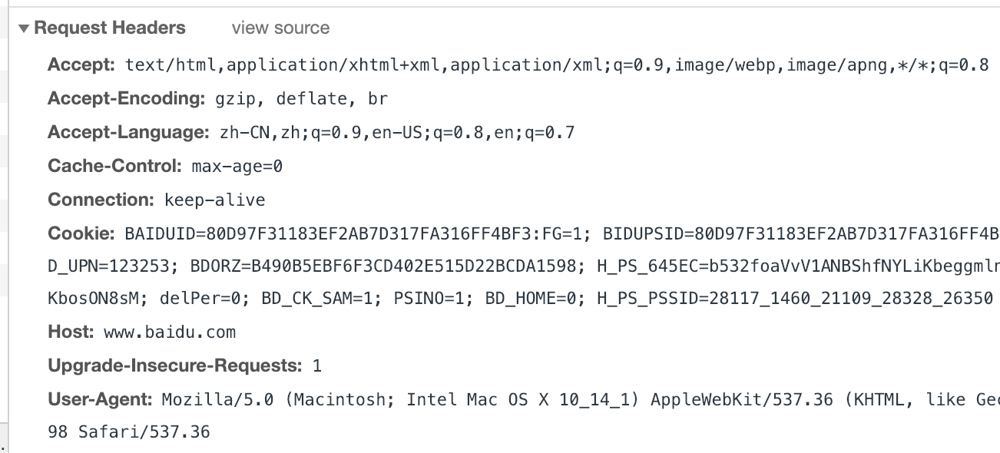

简单理解 HTTP 协议
昨天写了一篇在移动安卓端如何向服务器发送 HTTP 请求的文章，代码很少，操作起来也很简单。但是在安卓开发中，具体的 HTTP 连接和响应的细节都被封装在底层的函数中，我们并不能看到 HTTP 协议的真正面貌。所以今天我就来简单的讲讲我对 HTTP 协议的理解，当然今天只是说说 HTTP 协议比较浅显的部分，更深入的细节研究将在后续进行。
HTTP 协议主要是用来在服务器与浏览器直接传递信息，也就是常用的 B/S 模式，其实 B/S 模式本身就是一种 C/S 模式。每一次用户在点击一个超链接后浏览器作为客户端都会向服务器发出“请求”，而这个“请求”就是 HTTP 请求。HTTP 协议在协议栈中是在 TCP 层之上的，也就是说 HTTP 协议的传输是基于 TCP/IP 连接的，所以每一次发送 HTTP 请求之前都会在客户端与服务器之间进行 TCP 的三次握手连接。
HTTP 协议的默认端口号是80端口。HTTP 协议是单向的、无状态的协议，即只能单一的从客户端向服务器发送请求，而当客户端没有发送请求时，服务器是无法向客户端返回信息的（HTTP 1.1）。而 HTTP 的无状态是指，同一个浏览器的两次 HTTP 请求之间是没有关系的，对于服务器来说每一次请求都是独立的，没有任何关系。

当服务器与客户端建立了 TCP 连接之后即可进行 HTTP 的请求与响应，首先浏览器客户端会向服务器发送一个 HTTP 请求，请求中包含一个 HTTP 请求头部，和可能携带的信息。如图，比如当我们访问“百度”网站的时候，浏览器向百度的服务器发的一个 HTTP 请求头部包含以下内容：
- Accept： 表示浏览器支持的 MIME 类型；（HTML，图片等类型）
- Accept-Encoding： 表示浏览器支持的压缩编码格式；（gzip, deflate, sdch）
- Accept-Language： 表示浏览器支持的语言；（zh-CN 表示中文）
- Cache-Control： 表示浏览器的缓冲控制时间；（max-age=0 即缓存时间为0）
- Connection： 表示客户端与服务连接类型；（Keep-Alive 表示持久连接）
- Cookie： 表示浏览器本地存储的 Cookie 内容；
- Host： 表示请求的服务器域名；（https://www.baidu.com/）
- User-Agent： 表示本地浏览器客户端的信息；(包括浏览器版本、类型、CPU 信息等）
当服务器成功受理了 HTTP 请求时，将会返回一个状态码，如果状态码为200则表示此次交易成功。服务器将返回响应信息。响应信息中也包括一系列字段如下图，一部分与 HTTP 请求头部的内容一致。当然，除了响应头部该有的信息外还有服务器自己传来的特殊字段，一般用于其他作用。
上述响应头的部分字段意义如下：
- Bdpagetype / Bdqid / Cxy_all： 百度服务器传来的特殊字段；
- Server： 表示服务器的类型；（BWS：Baidu Web Server）
- Set-Cookie： 服务器想要设置的本地 Cookie 内容；
至此，一次简单的 HTTP 请求与响应就完成了。